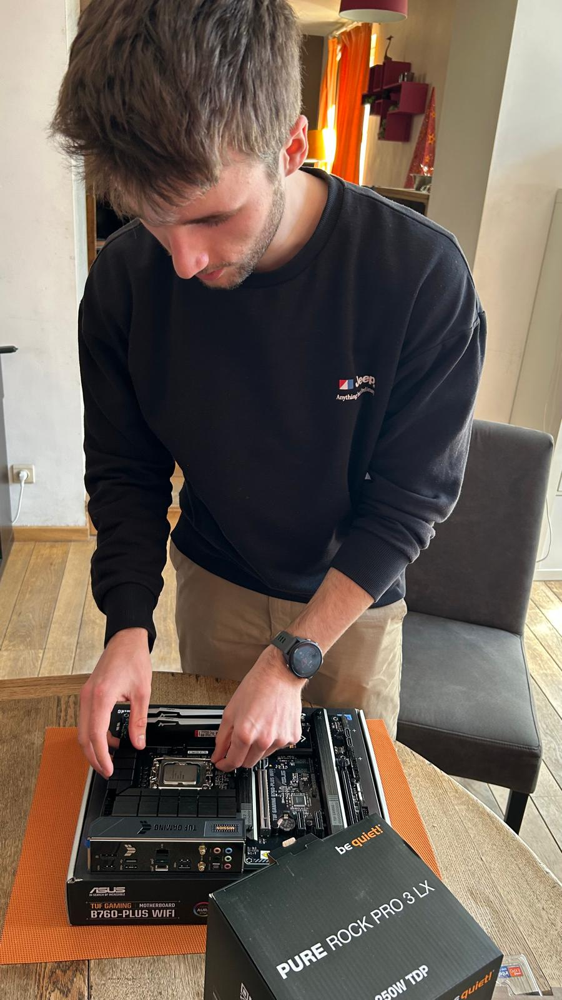
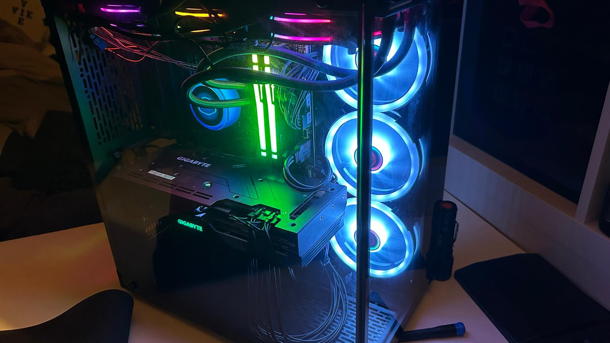
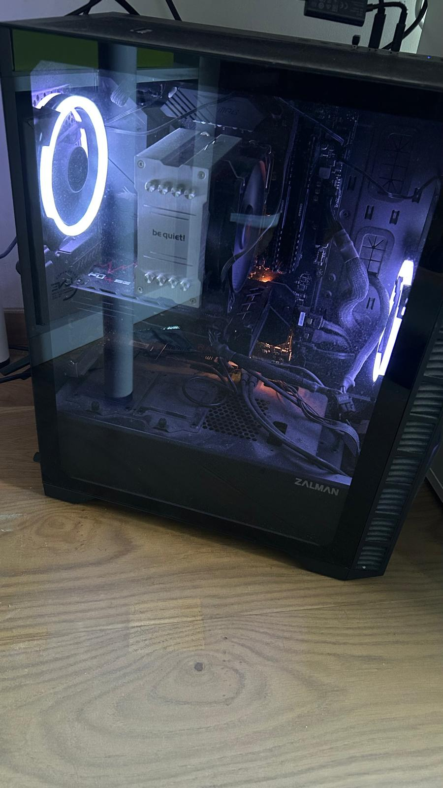

Au fil des années, j'ai eu l'occasion de monter plusieurs ordinateurs de gaming, que ce soit pour moi, mon père et mon frère. Ces montages se sont fait de manière autonome et avec des tutoriels youtube. De la sélection des composants selon un budget et des besoins définis, jusqu'à l'assemblage complet et la configuration initiale du système.
Ces montages m'ont permis de comprendre en profondeur l'architecture matérielle d'un ordinateur, que ce soit la compatibilité entre socket CPU et carte mère, les différences entre les types de RAM et de stockage (NVMe, SATA). J'ai également appris à diagnostiquer des problèmes matériels, un PC qui ne démarre pas au premier essai est une excellente école de méthode et de patience.
Ces expériences m'ont permis d'en apprendre beaucoup sur le matériel informatique, la connaissance du matériel est une base essentielle pour tout professionnel en réseau ou en administration système. Comprendre comment fonctionne la machine physique m'aide à mieux appréhender les contraintes lors du déploiement de serveurs ou lors de l'optimisation d'infrastructures.
Le conseil apporté aux membres de ma famille m'a aussi appris à vulgariser des concepts techniques pour un public de "non-initié". C'est une compétence utile dans tout environnement professionnel où l'on interagit avec des clients non techniques.


